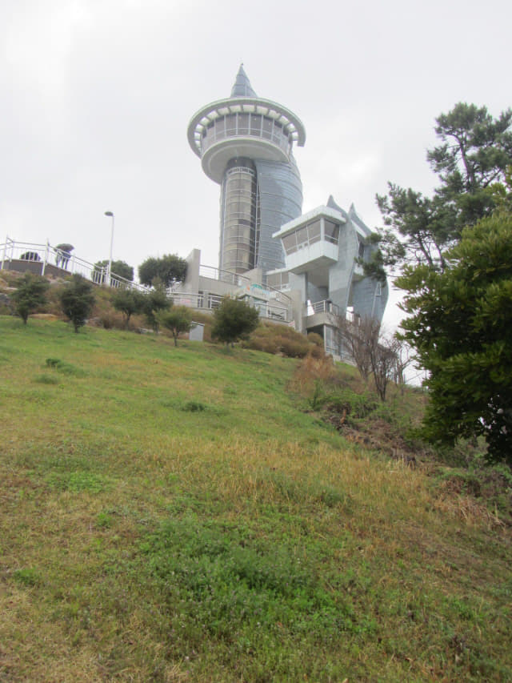

在土末葛頭山頂上的地角瞭望台和單軌纜車山頂站流連了一會, 時間已經是早上十一時十五分, 是時候循原路下山回她會合, 準備搭乘中午 12:15 的巴士返回海南。能夠登上土末最有代表性的景點地角瞭望台, 總算不枉此行了!
離開地角瞭望台, 來到下山口的樓梯前, 再轉身抬頭望望, 又忍不住提起相機, 足足用了五分鐘, 左搖右擺下勉強拍了以下三張照片。唉! 又弄濕了相機, 沒辦法, 下雨天拍攝高的景物都是這結果。

接著沿九曲十三彎的樓梯一直往下走, 下山的速度比上山快很多, 約十分鐘便返回山麓的沙土小路。望望手錶, 時間剛剛過了早上十一時二十五分, 這裡離土末單軌纜車山麓站不遠, 走不到十分鐘便可抵達, 可以放慢腳步了。
這時雨勢好像緩和了一些, 天空也好像明朗了一些。
沿海邊沙土小路一直走。

土末單軌纜車山麓站
約早上十一時四十分便返回土末單軌纜車山麓站。哈哈~~~ 她一定在纜車站內等得很擔心。
和她在土末單軌纜車山麓站內會合, 又碰到剛才在纜車山頂站那位車長, 當他告訴車站內的女職員在山頂遇到我的時候, 她顯得有點驚訝, 也倒是, 有誰那麼傻在這些天氣走上山頂, 弄得一身濕透!
離開土末單軌纜車山麓站, 沿海邊的步道走往巴士站。
不一會便返回海邊的「土末碑」。
售票至上車緊張剌激的一分鐘
約早上十一時五十分返回巴士站對面那間超級市場, 打算買了 12:15 的巴士車票後才在附近逛逛, 怎料老闆娘很緊張的將車票遞給我們, 連忙指著車票上的時間, 並拉著她的手走到門口, 指著馬路對面的一輛巴士。起初不明白, 因為還有半小時才開車, 但當看清楚車票上的時間, 竟然是「11:50」! 第一時間的反應是望望手錶, 剛剛過了 11:50!!!
Oh! My God! 巴士開車時間是 11:50, 不是 12:15! 便馬上跑出超級市場, 看見巴士已剛剛開動, 唯有不斷揮手呼喊, 幸好車頭剛好對正超級市場, 否則車長便看不到我們了!
氣呼呼的登上了巴士, 坐下來, 結束了售票至上車緊張剌激的一分鐘。
巴士行駛了約半小後, 雨勢突然又越下越大, 窗外一片迷濛, 雨點不斷「彈…..彈…..」的敲打車窗。
巴士約中午十二時半抵達海南綜合巴士客運站, 結束了風雨中的土末匆匆行程。